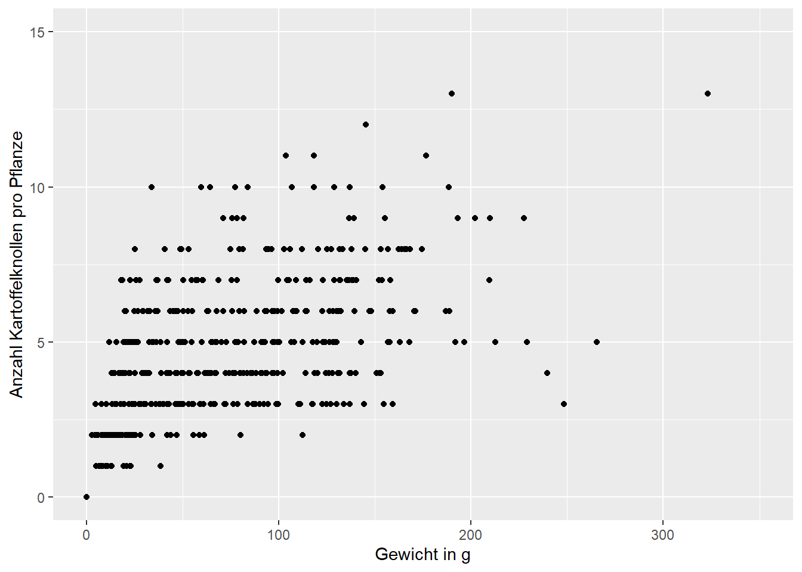
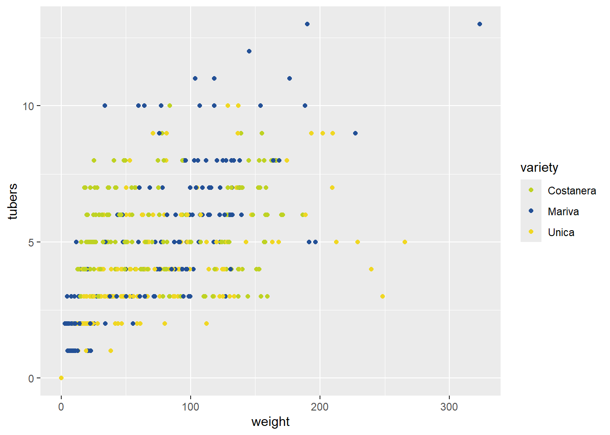
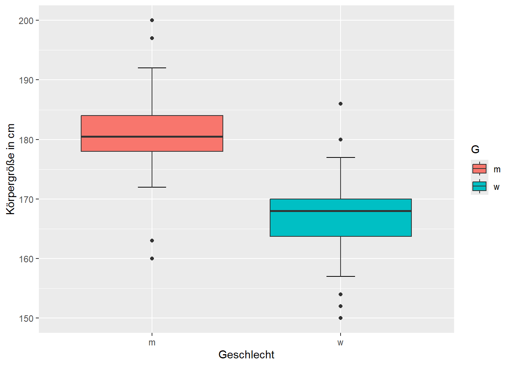
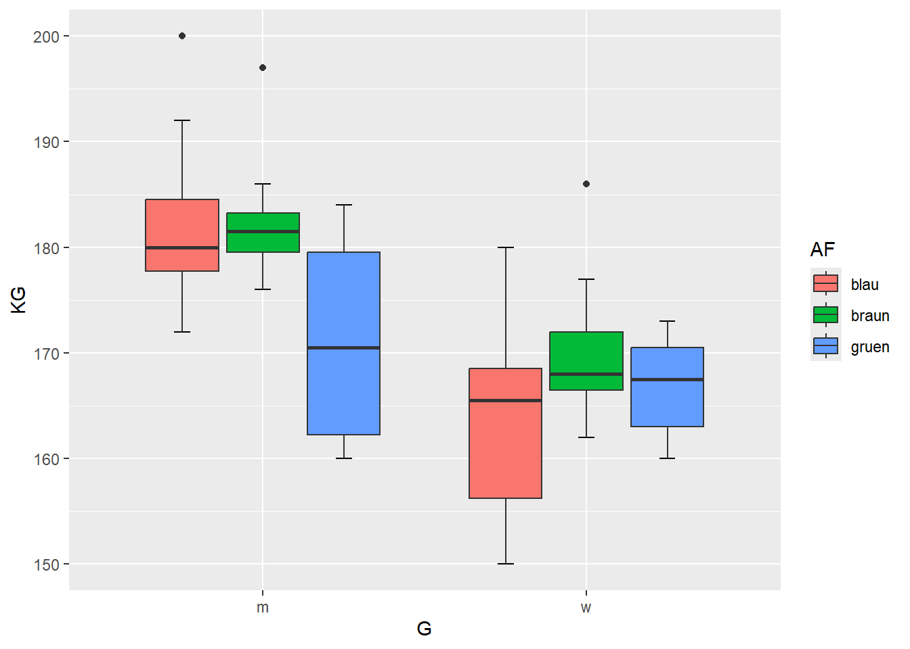
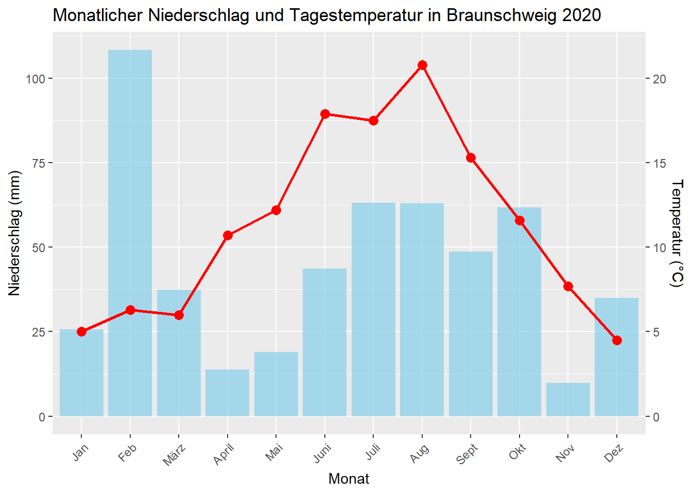
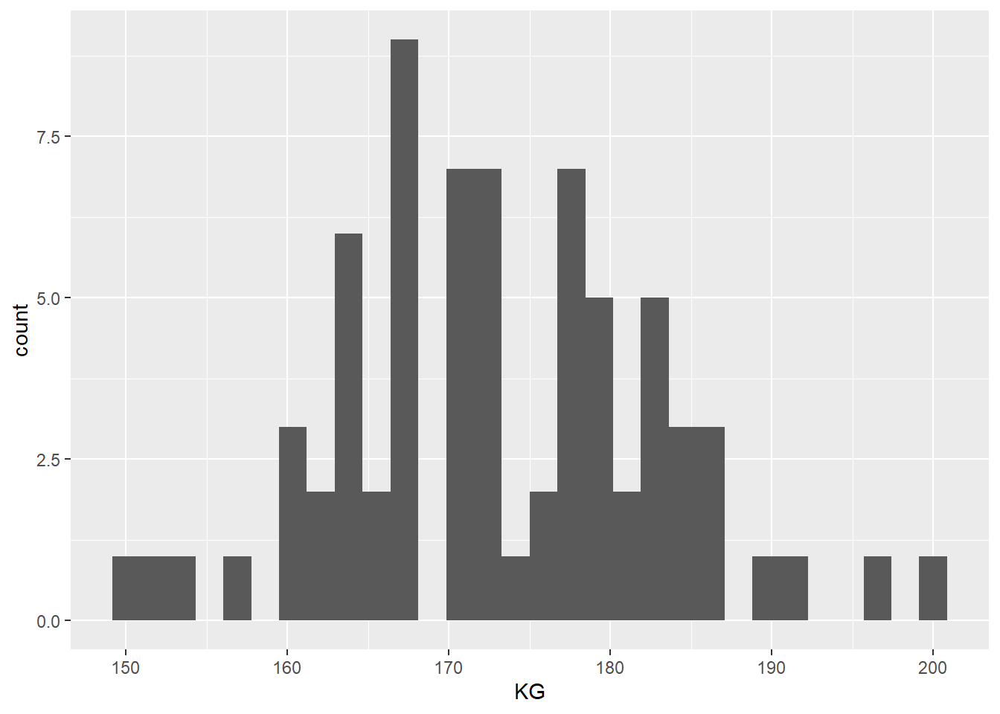
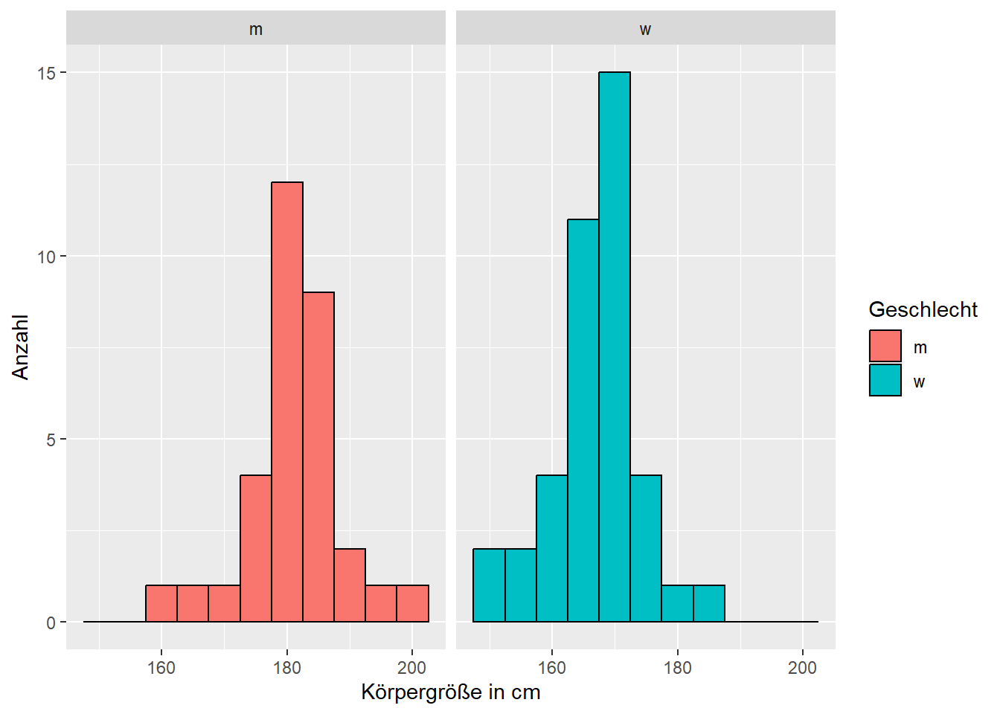

Bevor Daten statistisch analysiert werden, sollten sie grafisch dargestellt werden, um mögliche Fehler, Ausreißer oder Muster zu erkennen. Darüber hinaus ist die grafische Darstellung der Daten für die Präsentation und Interpretation statistischer Modelle unerlässlich. Wir nutzen hierfür den Datensatz potato.xlsx, wie schon in der vorherigen Kapiteln. Ich füge zusätzlich für die als character eingelesenen Spalten, Variablen als Faktoren ein (variety.f, method.f, infection.f) und ändere für variety.f2 die Reihenfolge der Faktorlevels, i.e. Unica ist nun das erste Level.
Mit der Funktion ggplot() geben wir mit data=pot den data.frame an, in dem sich die Daten befinden und mit dem Argument aes(x=weight, y=tubers) die Variablen, die dargestellt werden sollen (aes steht für aestetics). Das Ergebnis ist eine Plotoberfläche. Wir können nun verschiedene Layer hinzufügen (z.B. einen Scatterplot) und so bestimmen, wie die Daten dargestellt werden.
Mit der Funktion + geom_point() wird ein Scatterplot erzeugt, nachdem in der vorangegangenen Funktion ggplot() im Argument aes(x=, y=) die Variablen der x- und y-Achse gewählt wurden.
ggplot(data=pot, aes(x=weight, y=tubers)) +geom_point()+labs(x="Gewicht in g", y="Anzahl Kartoffelknollen pro Pflanze")+coord_cartesian(ylim=c(0,15), xlim =c(0,350))

Plotsymbol shape
Durch das Argument shape= in der Funktion geom_point() können die Plotsymbole geändert werden. Folgende Symbole werden durch die Zahlen 0 bis 24 abgebildet.
Mit scale_shape_manual(values=c(1,2,3)) kann man manuell die Plotsymbole verändern, wobei die Werte 1, 2 und 3 dann für die 3 Sorten stehen. Hier kann man ganze Zahlen von 0 bis 24 wählen (siehe Abbildung zu den Plotsymbolen weiter oben). Wichtig ist nur, dass die Anzahl der Zahlen mit der Anzahl der unterschiedlichen Sorten übereinstimmt.
Mit col=3 werden die Symbole grün dargestellt. Farben kann man durch die Zahlen 1 bis 7 wählen oder benennen z.B. “green”, “darkgreen”, “red”. Alle möglichen Farben findet ihr mit der Funktion colors()oder auf http://www.stat.columbia.edu/~tzheng/files/Rcolor.pdf
ggplot(data=pot, aes(x=weight, y=tubers, color=variety)) +geom_point()+scale_color_manual(values=c(rgb(190,210,35, max =255), rgb(35,80,150, max =255), rgb(240,215,35, max =255)))

Wenn keine Zuordnung der Werte zu den Farben erfolgt, dann werden die Farben entsprechend der Reihenfolge der Faktorlevels abgebildet (alphanumerisch).
Hier ein Beispiel mit Zuordnung.
ggplot(data=pot, aes(x=weight, y=tubers, color=variety)) +geom_point()+scale_color_manual(values=c("Mariva"=rgb(190,210,35, max =255), "Unica"=rgb(35,80,150, max =255), "Costanera"=rgb(240,215,35, max =255)))
ein Plot für jede Sorte facet_grid() und facet_wrap()
Mit der Funktion + facet_grid(~ variety) oder + facet_wrap(~ variety) wird ein separater Plot für jedes Gruppierungslevel der variety erzeugt.
Im Folgenden sehen wir Beispiele für unterschiedliche Modellfits. Diese dienen nur der Veranschaulichung und ersetzen nicht die statistischen Analysen mit Modelldiagnostik.
ggplot(data=pot, aes(x=weight, y=tubers, color=variety)) +geom_point()+geom_smooth(method=lm)+scale_color_manual(values=c(rgb(190,210,35, max =255), rgb(35,80,150, max =255), rgb(240,215,35, max =255)))+labs(x="Gewicht in g", y="Anzahl Kartoffelknollen")+coord_cartesian(ylim=c(0,15), xlim =c(0,350))+facet_grid(method~variety)+theme(legend.position="bottom")
`geom_smooth()` using formula = 'y ~ x'
Übung 3.1.
Die Körpergröße, Schuhgröße, Geschlecht und Augenfarbe von Kursteilnehmer wurde ermittelt. Importiere bitte die Daten Kursteilnehmer.xlsx in R und benenne den data.frame mit md.
Daten einlesen und prüfen
Der Datensatz hat in der ersten Zeile eine detaillierte und in der zweiter Zeile die kurze Variablenbezeichnung. Daher lese ich die Daten mit dem Argument startRow = 2 erst ab der zweiten Zeile ein.
Bei einem jittered Boxplot werden die Messwerte zusätzlich über den Boxplot geplottet. Das gibt dem Betrachter ein umfangreicheres Verständnis über die Daten. Um eine überlappung der Daten zu verhindern, wird für jeden Messwert eine kleine Zufallszahl in x-Richtung (width=0.25) gezogen. Natürlich werden die Werte nicht in der y-Richtung verändert (height=0). Um mögliche Ausreißer nicht doppelt abzubilden, muss das Argument outlier.shape=NA in der Funktion geom_boxplot() gesetzt werden.
Pallmann & Hothorn 2015: Boxplots for grouped and clustered data in toxicology. Archives of Toxicology. DOI 10.1007/s00204-015-1608-4
Noch nicht ganz richtig. Die Punkte haben zwar unterschiedliche Farben, sind aber nicht den Boxen der Sorten zugeordnet.
Mit dem Argument position=position_jitterdodge() können wir das ändern:
Häufig weisen Daten eine (Rechts-) Schiefe auf, d.h. es gibt viele kleine und wenige große Werte. Dies ist bei Zähldaten häufig der Fall, die poisson oder negative binomial verteilt sein können oder bei streng positiven diskreten Daten, wie z.B. Biomasse, die gamma-verteilt sein kann. Dabei nimmt die Varianz (die Streuung) häufig mit steigendem Mittelwert zu.
Für die Abbildung solcher Daten eignet sich eine Wurzel- oder Log-Transformation der Achsenabstände durch die die Funktion scale_y_sqrt() und scale_y_log10().
Für die Wurzel-Transformation müssen die Werte >= 0 sein:
Auch für die wurzeltransformierte Y-Achse können wir die Beschriftung der Achsenticks festlegen. Da wir keine Konstante addiert haben, werden die gleichen Informationen beim Argument breaks und label eingegeben:
Hierfür gibt es die Möglichkeit über das Argument labels und die Funktion number_format() der library(scales) das Dezimalzeichen als Kommas anzeigen zu lassen.
Die Reihenfolge der facets (oder auch der Levels im Boxplot) könnt ihr am einfachsten ändern, indem ihr die Reihenfolge der Faktorlevels definiert. Diese werden per default alphanumerisch sortiert. Ich habe nun nach dem Einlesen der Daten den Faktor variety.f2 mit dem Code variety.f2=factor(variety, levels=c("Unica" , "Costanera", "Mariva")) in der Funktion mutate() eingepflegt und die Levelreihenfolge geändert. Alternativer Code ohne mutate()pot$variety.f2=factor(pot$variety, levels=c("Unica" , "Costanera", "Mariva")) Weitere tolle Möglichkeiten, um Fakoren zu manipulieren, bietet die library(forcats)https://forcats.tidyverse.org/.
einen Boxplot für Körpergröße in Abhängigkeit von Geschlecht
Tip
ggplot(md, aes(x=G, y=KG, fill=G))+stat_boxplot(geom ="errorbar", width =0.15)+geom_boxplot()+labs(x="Geschlecht", y="Körpergröße in cm")

einen Boxplot für Körpergröße in Abhängigkeit von Geschlecht und Augenfarbe
Tip
ggplot(md, aes(x=G, y=KG, fill=AF))+stat_boxplot(geom ="errorbar", width =0.15, position =position_dodge(width=0.75))+geom_boxplot()

Wir könne den Plot noch schöner gestalten, indem wir die Farben und die Beschriftungen anpassen und die Legende unter den Plot legen.
ggplot(md, aes(x=G, y=KG, fill=AF))+stat_boxplot(geom ="errorbar", width =0.15, position =position_dodge(width=0.75))+geom_boxplot()+labs(x="Geschlecht", y="Körpergröße in cm")+scale_fill_manual(values =c("skyblue2", "peachpuff3", "darkseagreen3"), name="Augenfarbe")+scale_x_discrete(labels=c("Männer", "Frauen"))+theme(legend.position="bottom")
ggplot(md, aes(x=G, y=KG, fill=AF))+stat_boxplot(geom ="errorbar", width =0.15, position =position_dodge(width=0.75))+geom_boxplot()+labs(x="Geschlecht", y="Körpergröße in cm")+scale_fill_manual(values =c("skyblue2", "peachpuff3", "darkseagreen3"), name="Augenfarbe")+scale_x_discrete(labels=c("Männer", "Frauen"))+facet_wrap(~AF)+theme(legend.position="bottom")
Zusatzaufgabe:
Plotte einen jittered Boxplot von Körpergröße in Relation zum Geschlecht und Augenfarbe
wichtig
Wenn die Beobachtungen als jittered Punkte dargestellt werden, muss in geom_boxplot() das Argument outlier.shape=NA gesetzt werden, damit die Ausreißer nicht doppelt erscheinen. Für eine korrekte Zuordnung der Punkte zu den Gruppen muss das Argument position=position_jitterdodge(jitter.width = 0.1, jitter.height = 0, dodge.width=0.75) gesetzt werden.
Mit der Funktion + facet_wrap(~ variety) oder + facet_grid(~ variety) wird ein separater Plot (hier Histogramm) für jedes Gruppierungslevel der variety erzeugt.
library(ggridges)ggplot(data=pot, aes(x = weight, y = method, fill = method)) +geom_density_ridges_gradient(scale =3, rel_min_height =0.01) +scale_fill_viridis_d(name ="weigth of method:", option ="D")# Farbschema über Option A bis H
Picking joint bandwidth of 12.5
Allerdings wird im Densityplot der Wertebereich weiter dargestellt als beobachtet.
ggplot(data=pot, aes(x = weight, y = method, col=method, fill=method)) +geom_density_ridges(jittered_points =TRUE, position =position_points_jitter(width =0, height =0.1, yoffset =-0.2),alpha =0.7, scale =0.7)+scale_color_viridis_d(name ="weight of method", option ="D")+scale_fill_viridis_d(guide="none")
Mit der Funktion scale_y_continuous und dem Argument sec.axis erzeugen wir eine zweite y-Achse für die Temperatur. In den Funktionen geom_line() und geom_point() multipliziere ich die Temperatur mit 5, um sie besser in den Plot zu integrieren und verwende dann die Funktion sec.axis, um die Skala der zweiten Achse entsprechend anzupassen, i.e. die Werte wieder durch 5 dividieren.
ggplot(w, aes(x = Monat)) +geom_bar(aes(y = Nied), stat ="identity", fill ="skyblue", alpha =0.7) +geom_line(aes(y = Temp*5 , group =1), color ="red", linewidth =1) +geom_point(aes(y = Temp*5), color ="red", size =3) +scale_y_continuous(name ="Niederschlag (mm)", breaks=c(0,25,50,75,100),sec.axis =sec_axis(~./5, name ="Temperatur (°C)")) +labs(title ="Monatlicher Niederschlag und Tagestemperatur in Braunschweig 2020",x ="Monat") +theme(axis.text.x =element_text(angle =45, hjust =1))

Mosaikplot mit library(vcd)
zur Darstellung von kategorialen Daten
Größe der Rechtecke entspricht beobachtete Häufigkeit eines Merkmals
Farbe entspricht den Abweichungen zwischen beobachteten und erwarteten Häufigkeiten (Residuen)
Um mehrere Plots in einer Grafik abzubilden, müssen die Plots zunächst einzeln in Objekten gespeichert werden (z.B. p1 bis p4), um dann mit der Funktion grid.arrange(p1,p2,p3,p4, ncol=2) der library(gridExtra) geplottet zu werden. Mit dem Argument ncol kann die Anzahl der Spalten bestimmt werden.
library(gridExtra)
Attache Paket: 'gridExtra'
Das folgende Objekt ist maskiert 'package:dplyr':
combine
Das ist noch nicht wirklich schön. Die Legenden nehmen zu viel Platz ein. Alle Plots haben zudem die gleiche Legende. Diese Redundanz können wir entfernen, indem wir nur im ersten Plot eine Legende zeichnen und dabei diese durch das Argument theme(legend.position=c(0.8,0.7)) in den Plot zeichnen. Bei den anderen Plots unterdrücken wir durch theme(legend.position="none") die Legende.
p1=ggplot(data=pot, aes(weight, colour=method, fill=method)) +geom_density(adjust=.75, alpha=.2)+theme(legend.position=c(0.8,0.7)) #Legende innerhalb der Plotoberfläche
Warning: A numeric `legend.position` argument in `theme()` was deprecated in ggplot2
3.5.0.
ℹ Please use the `legend.position.inside` argument of `theme()` instead.
Vier Plots in einer Grafik mit einer Legende mit library(ggpubr)
Eine weitere Möglichkeit bietet die library(ggpubr) mit der Funktion ggarrange(). Hier können auch die einzelnen Plots z.B. mit a), b), c) und d) beschriftet werden.
Alle Abbildungen, die mit ggplot() erstellt werden, können als pdf, tiff, jpg, eps usw. im working directory gespeichert werden. Zudem kann man über die Argumente die Größe und die Auflösung bestimmen. Das Argument scale skaliert die Punkte und Buchstaben relativ zur Plotgröße.
ggplot(data=pot, aes(x=weight, y=tubers)) +geom_point()+labs(x="Gewicht in g", y="Anzahl Kartoffelknollen")ggsave("plot1.pdf")ggsave("plot2.pdf", width =10, height =8, units ="cm")ggsave("plot2.1.pdf", width =10, height =8, units ="cm", scale=1.3)ggsave("plot2.2.pdf", width =10, height =8, units ="cm", scale=0.7)ggsave("plot3.tiff", dpi=600, width =10, height =8, units ="cm", compression="lzw")
Übung 3.3.
Plotte:
ein Histogramm von Körpergröße
Tip
ggplot(data=md, aes(KG)) +geom_histogram()
`stat_bin()` using `bins = 30`. Pick better value with `binwidth`.

ein Histogramm von Körpergröße getrennt für Frauen und Männer
Tip
ggplot(data=md, aes(KG, fill=G)) +geom_histogram(binwidth =5, col=1)+ylab("Anzahl")+xlab("Körpergröße in cm")+facet_wrap(~ G)+labs(fill="Geschlecht")

Plotte einen Mosaikplot für das Auftreten der Kombinationen aus Augenfarbe und Geschlecht